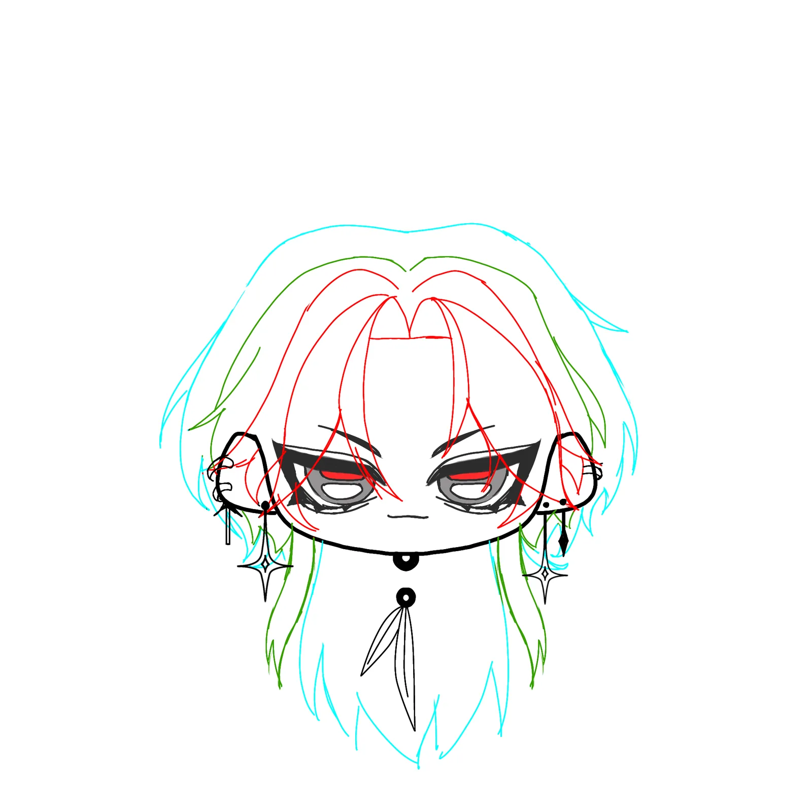

svgtostl
A tool that turns my filled-black drawings into printable 3D parts with sharp corners and curves true to the drawing — so I can print exactly what I drew, for keychains and even fabric patterns.
- Year
- 2026
- Team / role
- Solo · self-initiated
- Tools
- Image → vector → STL pipeline · 3D printer (0.2 mm nozzle)
- Status
- in use known limits logged

Problem
I wanted small printed pieces that keep every detail of my drawing, without modelling each one by hand and without AI-generated models that lose detail.
What I decided
- The standard: true to the drawing. Sharp corners and curves that match what I drew. I judge quality by smooth curves, sharp tips and no wobble — not by file size.
- No point reduction. I cut the Douglas-Peucker simplify step: on a ring of 90 mm radius it made straight segments 4–6 mm long that printed as visible facets at a 0.2 mm nozzle. If triangles must be reduced, resample along the curve length instead.
- Tune from real prints. Settings were chosen by measuring printed parts — a lower blur setting sharpened tips by about 0.17–0.23 mm.
- Split, then stack. Drawings are converted part by part and the pieces stack together; keychains are designed to hold a bearing so the character swings.
Result
Used for my own keychains, for a 22-piece shop logo print, and for printing fabric patterns. Limits I logged myself: the STL is not yet watertight (the slicer repairs it), and large images use around 3 GB of RAM.
Gallery





My role vs AI
Me: the method, the quality standard and every keep/cut decision; drawing, printing and painting the keychains. AI: wrote the tool’s code to my spec.